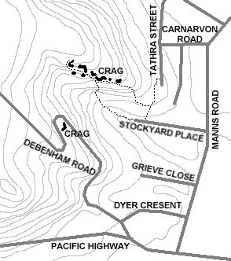

Sport Climbs
Blackwall Mountain
I saw 10 bolted sport routes and 3 ringbolted overhangs which might need some trad gear placed between ringbolts and lots of top rope possibilities
How to get there
From the rip bridge heading towards Woy Woy turn left onto picnic pde, then turn left onto flathead road, then turn left onto Booker bay road, follow under bridge then turn left onto Mullbong road, drive to end.
Do not take fire trail, use foot track to the left of the fire trail follow up hill about 250m then as you guessed take left fork in track up steep rock steps follow track through rocks, when you are there you will know it.
Palmdale
Two climbing spots either side of the road.
Most runs look 24+
How to get there
Head out to Palmdale (near the crematorium).
Drive towards the National park.
About 2km along the dirt road you will pass through a road cutting. Park just past this.
The climbs are on either side of the road here
unknown 2
 7m 24
7m 24
Start:
Many routes. Names unknown currently please email us if you know them
The road is a logging road and gets rough.
OK in most cars, but DO NOT take a lowered car if you wish to keep your exhaust
Patonga
Fairly long section of cliffs near patonga.
How to get there
Head out to patonga.
When you reach the top of the hill before patonga drive until you hit a long straight section.
On the left there is a trail to Warrah Lookout.
Climbs surround the lookout
Warning: Climbing is currently banned in this area.
Phegans Bay
There is a range of climbs starting from around grade 14. Most are bolted, however some anchor points have been bashed in on main face (see further on for more information about this)
How to get there
From the freeway take the Gosford exit, turn onto Woy Woy road at the second lights in Kariong.
Follow Woy Woy road past the fixed speed camera, turn at Woy Woy Bay rd then first right down Olive av. Go straight through the crossroad to end of Olive av follow the track track round to the rocks.
Reeves Street
The is a large slab, a nice crack climb, an overhang and more around the back
How to get there
Reeves street is off manns road between west gosford and narara, the turnoff is right on a corner. Drive to end of road onto the dirt section until you can't drive any further. Park at the end here but do not block access for the house at the end. Follow track about 100 metres to base of climbs.

Wards Hill
A surprisngly impressive crag located right beside Ward's Hill Rd, Empire Bay.
The crag has two distinct walls - the first is a nice looking 10m high grey wall with 5 or 6 mainly bolted routes (old carrots plus some rather mangled fixed hangers). The main wall is a bit further on, and reaches about 20m in height, with superb orange rock at the base. There look to be about another half dozen routes or so on this wall, with a variety of carrots and fixed hangers for protection.
How to get there
To get to the crag, park in the carpark at the top of the hill (at the corner of Ward's Hill Rd and Maitland Bay Drive) and find a track that heads off into the bush, parallel to Ward's Hill Rd. Alternatively, you can walk down Ward's Hill road (take care!) to the first hairpin, and follow a track off to the right that leads up to the crag.
All of the routes here look to be 20+.
West Gosford
A neat little crag just behind Hardware House at West Gosford
There is also a smaller area located on Debenham Road.
How to get there
Drive out West Gosford then head along Manns Road until you reach Stockyard Place then turn at the traffic lights up Stockyard Place towards Hardware house (also called Bunnings Hardware) and park at the end of that road.
The crag is just up and to the right of the road.

Traditional Climbs
Bouddi National Park
Bouddi National Park is a small national park on the central coast of NSW. Although it's very small, it does have some quite large sea cliffs similar to those found in Sydney (Bouddi is part of the same region of sandstone). These are generally areas of active erosion, and are loose, unstable and unsuitable for climbing. There are also some inland cliffs which contain most of the climbing. Many of these are at the heads of gullies, and can be quite wet and slimy, particularly after rain.
How to get there
Head out to Wagstaffe then turn somewhere, exact location is unknown at the moment, but if you discover then please email us.
Main Lip
This is the main lip visible in the cave, spans the whole cave
Arena
15m 14
Start: The face below the obvious lookout rock platform. 15m left of the chossy roof
The face below the obvious lookout rock platform. 15m left of the chossy roof, past the ramp that leads to the lookout platform. A fairly steep face, with plenty of crimpy handholds down low, and jugs near the top. Good anchors on top, although they are well back from the edge. Seems to have been climbed (or abseiled?) before, as one of the anchor rocks up the top is quite chipped
Go to Peter Monks site for a photo
Bullima Spur
A long series of buttresses up to about 25m in height, located on the eastern side of the Bullima Spur just south of Maitland Bay. Most of the buttresses are accessed via the Bullima Spur walking track, which branches off the Maitland Bay walking track not far from the Maitland Bay car park. The track initially passes a boulder field that looks like it could have some potential for good bouldering (perhaps after some cleaning). To get to the first set of walls (where all of the following climbs are), ignore the Bullima Spur track and continue down the Maitland Bay track until it passes down between two huge boulders (at the bottom and to the left is a small bouldering area sheltered from the rain). The track then veers right and down into a creek and then turns back left. At this point leave the track and head straight across the creek and up the other side to the top of the cliff. Two small descent gullies split the cliff just here. The following climbs have probably been done before, so the names probably aren't correct.
The Arete
8m 20
Start: Left of descent gully
The blunt arete just to the left of the descent gully. Scramble up to the waist high ledge then up on small, sharp crimps to the large, sloping break. Doddle up the top section on jugs.
Go to Peter monks site for a photo
 Bombie
10m 22
Bombie
10m 22
Start: 5m left of the blunt arete
Scramble onto the waist high ledge, then up, using the well-worn dish, the vertical intrusion on the left and some slopers on the shield formation. Pretty awful top-out, but a good belay using cams on a block about 5m back.
Little Lobster
The Little Lobster crag is uphill from Little Lobster beach (which is about 500m North of Lobster Beach). It features a massive 10m roof (which might even be climbable!), plus some smaller rooves, and some nice looking slabs at the southern end. The rock was wet from rain when we climbed here, so much of the crag we only looked at. Some potential for good climbs. To get there, follow the directions for Dog Face. Where the track branches off right to Dog Face, the massive roof is straight in front of you, over the top of the ridge. You can either rap in (anchor off two trees at all times!), or you can head right until it's possible to scramble down to the base of the cliff.
Moss City
15m 17/18
Start: In the middle of the nice slab at the southern end of the crag
Up a very thin face then right to a small ledge. Straight up from the ledge, being very careful of crumbly rock (the hole to the right is very crumbly). The bottom section was virtually impossible after two days of rain, as it was covered in moss and slime. A toothbrush for cleaning holds is recommended.
Got to Peter monks site for a photo
South Lobster
The orange face visible high up on the southern headland of Lobster Beach. The obvious way to get there is to bush bash up the hill from the beach, although it's pretty hard going. A better alternative is to follow the "flannel flower" track up to the top of the ridge. At the top there's a faint walking track that heads off to the right along the top of the ridge above the southern end of the beach. Follow this for 500m or so until it starts to drop down. At this point the cliff is off to the right, a short distance down from the top of the ridge. About 20m left of the main orange face is a nice looking slabby face about 12m high. The middle of the face looks like it would be leadable (numerous horizontal breaks), and pretty easy.
15plus
12m 21
Start: On the face 5m to the left of the fallen block
An excellent climb shaded by a large tree, but don't forget the SPF15+ (hence the name) since it faces north and bakes. On the face 5m to the left of the fallen block, distinguished by 3 vertical cracks and a chossy, windblown cave at ground level. 15+ is the left crack, and starts on the ledge beside the smallish blackbutt eucalypt. Pull out along the vertical wall under the roof, being careful of loose rock. Reach up around the lip for a large jug then crank out onto the main face. Hand jams in the bottom of the crack, while higher up only fingers will fit. Crux move up thin face to the juggy lip. Probably good pro in the crack (small cams), but next to no anchors on top (a large red gum about 15m back from the edge is good, but less than convenient).
go to Peter monks site for a photo
15plus Variant
12m 20
Start: From the base of the finger crack on 15+
From the base of the finger crack on 15+, head left and up on small crimpers.
A word of warning before anyone climbs in Bouddi. The park has seen little or no climbing, so many of the edges and thinner pieces of rock will snap off if you as much as breathe on them. Even the larger holds aren't necessarily safe, so be careful. We top-roped all the climbs listed below, with most of them being unleadable face climbs. Where I mention good protection, I mean I would feel safe placing protection on these climbs, were I to lead them. I'd recommend wearing a helmet and top-roping all climbs before leading, however, just to test out the rock and placements.
Since the crags listed below are within the boundaries of the National Park, bolts should not be placed on the rock. Aside from ethical considerations, I believe the placement of new bolts in Australian National Parks is illegal.
This location was copied from Peter Monks website (Goto 'links' to find the site)
Hybrid Climbs
Hawkesbury River
The hawkesbury is an area of sandstone surrounding a river and includes areas such as Cottage Point, Suicide Slabs and the Wondabyne area.
How to get there
Getting there depends on which location you are heading to. Some places are only accessable by train, some areas only by boat while some can be driven to.
The Hawkesbury River is covered by the Sydney Rockclimbing guide at www.sydneyclimbing.com.
For the section relating to Hawkesbury click the following link. http://www.sydneyclimbing.com/xgo_hawkesbury_river.html
Jolls Bridge
A long section of cliffs sitting right beside the freeway. Varied grades of climbs with heights of up to 45m. Most climbs require mixed gear with some sport routes.
How to get there
Travelling south on the freeway you hit the end of the 90kph zone.
Turn off at the Brooklyn exit head north up the old pacific highway. A little way along you pass just below Jolls bridge. There is decent parking a bit further on.
Walk up the hill directly below the bridge, pass under then head up beside the road to the top of the cliff.
A full guide is available at http://www.sydneyclimbing.com/xgo_jolls_bridge.html
Boulder Climbs
Blackwall Boulders
Many boulder problems located at the base of the Blackwall climbs and further to the left
How to get there
From the rip bridge heading towards Woy Woy turn left onto Picnic pde, then turn left onto Flathead road, then turn left onto booker bay road, follow under bridge then turn left onto Mullbong road, drive to end.
Do not take the fire trail, use the foot track to the left of the fire trail follow up hill about 250m then as you guessed take left fork in track up steep rock steps follow track through rocks, when you are there you will know it.
Bouddi Bouldering
Scattered bouldering at and around the crags in bouddi national park
How to get there
Head out the Wagstaffe then turn somewhere, exact location is unknown at the moment, but if you discover then please email us.

Go to Peter Monks site for a photo.
This stuff ripped from Peter monks climbing page, see links for link to his site.
Palmdale bouldering
Some bouldering around and below the main wall at Palmdale crag.
A few small problems on boulders, one or two high-ball problems (about 6-7metres) and a nice large cave with decent roof runs (V4+ at least)
How to get there
Head out to Palmdale (near the crematorium).
Drive towards the National park.
About 2km along the dirt road you will pass through a road cutting. Park just past this.
Reeves Street Bouldering
There is a boulder just before the slab and more further up the track
How to get there
Reeves street is off manns road between west gosford and narara, the turnoff is right on a corner. Drive to end of road onto the dirt section until you can't drive any further. Park at the end here but do not block access for the house at the end. Follow track about 100 metres to base of climbs.
Rumbalara
A nice large cave with good overhanging runs and some pocketed routes as well as a 20m long flat wall and scattered boulders
How to get there
Go up to rumbalara and go to the end of the road.
At the end the road wraps back around itself and on the side there are some toilets. Park here.
To get to the cave head directly down the hill from where the toilets are and it drops off.
Get down this drop off and head left and you wil find a cave (very obvious as to which one as it is very large.
To get to the flat wall, head back down the road and follow the path to your right. It will meet up with a wide disabled walking trail. Continue along this trail until you reach a sculpture. Just past this there is a descent gully on the right that heads down to a path. The climbs are along this path in both directions.
Main Lip
This is the main lip visible in the cave, spans the whole cave
Swing Low
10m V2
Start: the far right
This run starts on the far right, just at the edge of the cave and goes across the corner, staying low then is a traverse of the lower lip, hanging below it at all times. Can be done in either direction
Sweet Chariot
10m V0
Start: far right
Starts at the same point as Swing Low, but stays high to get past the corner then continues up above the lip. Can be done in either direction
Coming Forth
2m V1
Start: middle right side of cave
Sit start that begins in middle right side of cave, coming from underneath the lip and ending with headbutting the roof
To Carry
2m V2
Start: under crack in lip at the middle of the cave
Sit start that begins under crack in lip at the middle of the cave, climb the crack itself (no face climbing :-) and top out by headbutting roof again
Me Home
2m V0
Start: sitting on the small rock to the left of the main rock
Bloody easy sit start which starts by sitting on the small rock to the left of the main rock. Pull up and over then head directly up
Left Wall
On the left wall of the cave
unknown 1
2m V0
Start: left wall
Climb up the right side of the left wall. Big, sandy holds. Don't trust your hands :-)
unknown 2
2m V3/4
Start: outside wall of cave
On outside wall of cave to the left there is a bunch of single/double finger pockets that head up and tops out over flat,sloppy ledge There are at least two different paths here
unknown 3
5m V3
Start: just round the end on the left
Starts just round the end on the left, sit start from the boulder with feet under the edge, follows round and links up with the others on the left wall. Simple to start, hard to get around the end
Entire Cave
The whole lenght of the cave added together
Rumbalara Rumble
15m V4
Start: the far left
Starts on the far left with unknown 3 then links it via unknown 1 to Swing Low or Sweet Chariot, finishing around the far right end. Long full traverse of cave, possible but bloody hard (for me anyway)
Flat wall path
A 20m long flat wall plus a couple of scattered boulders
Traverse
20m 4
Start: Far right of long flat wall (as far as possible)
Just traverse all the way across following the horizontal crack staying below the top lip
Water Reservoir
A lookout plus isolated boulders below the water reservoir. Park near the reservoir then walk down to road a bit and look for a path on the left. Follow this path to the lookout and continue to the right for the isolated boulders
Unnamed
0m
Start: Anywhere
A few different boulders
These runs may have been done before I ever saw them so the names/grades may not be correct.
If you know the proper names/grades please let me know.
Tuggerah
Lots of scattered boulders, few with possibilities but some up to 4-5 meters high.
How to get there
Head along the freeway and turn off at the Tuggerah exit heading towards Westfield.
Take the first left and park at the grass on the left of the first corner.
There is a track off to the west take that, don't look at the small boulders on the slope about 4 - 500 meters later there is a larger boulder might have a climb or 2 continue west the next ones are covered in graffiti and there are some chalk marks
Take a crash mat! Much of the area is covered in broken glass so landings could be nasty.
Wamberal
Five boulders, many problems
How to get there
Follow the track up the hill from Aldinga Drive, continue past the water tank and phone tower, follow track along ridge untill you reach the boulders, there are five boulders with many problems.
** rock is sharp **
You might want to take a wire brush as there is moss on some of the rocks and you might want to make a new problem that has been hidden with moss.
Indoor Climbs
Climb Fit
Climb Fit is a large indoor climbing gym in St. Leonards.
Go to Climb Fit Home for details
How to get there
Drive down the freeway then turn off at Wahroonga.
Keep driving till you hit St. Leonards.
From the corner of Pacific Hwy and Herbert Street, its just a 5 minute walk.
Proceed up herbert street to the first set of lights and go left into frederick street, its the last drive way before the round about number 12. When in the drive way its Unit 4. You can't miss it.
This is not on the Central Coast, but it's only about 1hr away and its good.
Kincumber - The Hangover
Indoor wall with nice overhang and single lead climb. 11 - 12 Cochrone Street, Kincumber 2251 - (02) 4368 3197
How to get there
Head out to kincumber along avoca drive.
Turn right after kincumber at the end roundabout.
Turn right at the next roundabout and its just around the next corner in Kincumber recreation Centre
Lakehaven
Small indoor wall located in Lake Haven recreation centre at Goobarabah Ave Gorokan 2263 - (02) 4392 7474
How to get there
Find Lakehaven shopping centre, go in the far right entry to the carpark and the recreation centre is behind the shopping centre
X-Treme Edge
The rockclimbing shop on the Coast. Located in North Wyong. PH 1300 302 111
How to get there
Coming from the south go up the freeway turn off the Wyong along Anzac Parade then turn left onto the Pacific Highway otherwise just head up the Pacific Highway.
Eventually you will reach a round about at the end at which point you turn right and then left onto Lucca Road a bit further on.
The Shop is just up on the right (where the hot food shop is)
Located at 3/3 Luca road, North Wyong NSW 2259
Free Call 1300 302 111
Open Monday-Saturday 9am-4pm
Sells all climbing gear at great prices.